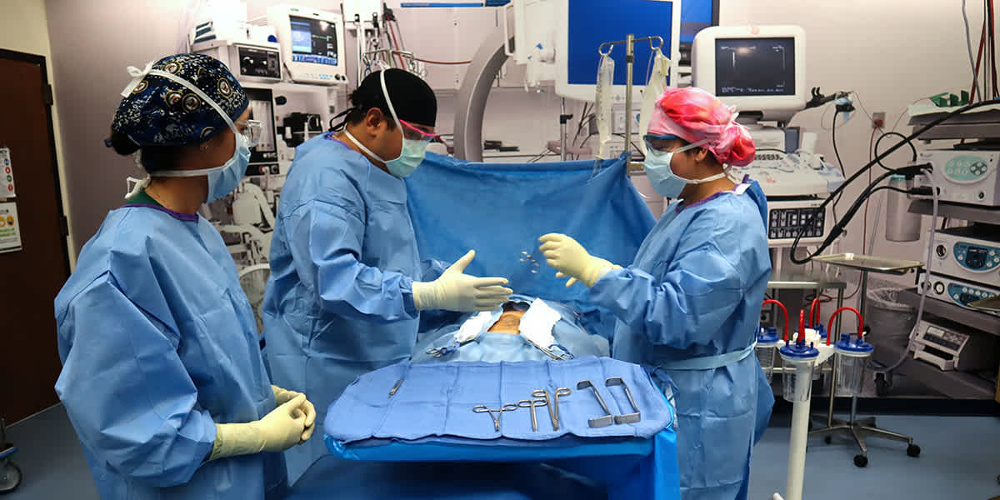

St. Petersburg Campus
Surgical Technology
The mission of this program is to provide training for employment in the surgical area of the health care industry. The surgical technologist works under the supervision of surgical and nursing personnel to facilitate the safe and effective administration of invasive procedures.
Have questions? Talk to your counselor before you apply.

Program Documents
Start with the at-a-glance overview, then dig into the details below.
Admission Requirements
Surgical Technology is a health occupations program with specific entrance requirements. Please review them before applying.
Special Admission Requirements
Specific health occupations admission guidelines (immunizations, drug screening, background check, etc.) are available in Student Services.
Find out what skills you need to be a surgical technologist →
About This Program
Program H170211 consists of a planned sequence of courses totaling 1,330 clock hours. The program is 15 months long. Students attend classes and clinicals Monday through Friday, 7:00 am to 12:15 pm. Hours may vary during clinical externship rotations in order to accommodate Operating Room case schedules.
Course Sequence
Basic Healthcare Worker (HSC0003) 90 Hours
Instruction covers basic health care and safety procedures, employability, communications, interpersonal skills, basic mathematics, science, and computer literacy.
Central Supply Assistant (STS0015) 210 Hours
Consists of theory and application of central services departmental organization and function; basic anatomy, physiology, microbiology and chemistry related to central service activities; quality assurance; infection control and isolation techniques, principles of safety; principles, methods and controls of sterilization processes; cleaning, processing packaging, distributing, and storing.
Surgical Technologist, 1 of 3 (STS0010) 343 Hours
This course provides the student with an introduction to anatomy and basic physiology, microbiology, the biomedical sciences, and pharmacology.
Surgical Technologist, 2 of 3 (STS0011) 343 Hours
This course provides an introduction to operating room theory with a practical application of the skills to be performed by the surgical technologist; principles and concepts of aseptic technique and their relation to the surgical suite; proper use of instrumentation, sutures, needles, and surgical counts; all other techniques associated with the surgical technologist’s role; and a review of anatomy and the various specialties.
Surgical Technologist, 3 of 3 (STS0012) 344 Hours
This course includes legal and ethical responsibilities; clinical application; and a continuation of the study of anatomy and specialty areas.
Clinical Note
The Pinellas Technical College Surgical Technology program is unable to accommodate students who want to participate in clinicals at sites other than those approved for use locally. Only day hours are available. Note: schedule will vary during clinical experience hours; see the instructor or counselor for more information.
Program Requirements
Minimum Satisfactory Academic Progress: 80%
Minimum Attendance: 90%
Basic Skills Exit: Computation - 10 and Communication - 11
Credentials
Certified Sterile Processing and Distribution Technician (CSPDT) and Tech in Surgery Certified (TS-C). Accredited by the National Commission for Certifying Agencies (NCCA).
Upcoming Classes
All applicants must apply online. If you have previously submitted a paper application packet, please complete our new online application.
Traditional Format
Next session start date: March 23, 2026
Class Times (On Campus): Mon–Fri | 7:00 AM – 12:15 PM
BayCare Team Member Surgical Technology Apprenticeship
Who Can Apply: Current BayCare team members
Start Date: August 11, 2026
Application Deadline: July 2, 2026
All applicants must be current BayCare team members. When applying, choose the application major selection: BayCare- Surgical Technology Apprenticeship (Term: Fall 1).
Continue to check back for updates. Please monitor this page for announcements regarding future program offerings.
Articulation Agreement
This program participates in the following articulation agreement:
Credentials & Licensure
CSPDT & Tech in Surgery Certified (TS-C)
After completion of course HSC003 and course STS0015, students are eligible to sit for the Certified Sterile Processing and Distribution Technician (CSPDT) exam. After graduation, students are eligible to sit for the National Center for Competency Testing (NCCT) exam to become a Tech in Surgery Certified (TS-C).
Accreditation
National Commission for Certifying Agencies (NCCA).
Industry Certifications and FL Ready to Work Credentials
The goal of Pinellas Technical College's career and technical programs is for each student to achieve an industry-recognized credential or professional license. Where certifications or licenses are linked to a career, Pinellas Technical College's goal is to prepare graduates of that career technical program for the certification or license exam. In some cases, Pinellas Technical College proctors the exams. Specific certification and license requirements are available from Pinellas Technical College school counselors and program instructors. It is an expectation that students will earn the FL Ready to Work Soft Skills credential before graduating. The Digital Skills credential is also highly recommended as all careers use technology, and it now includes AI topics. The Employability Skills credential reviews basic reading and math skills used on the job. These credentials align with our BIGSIX initiative because our students will be able to articulate how professionalism, pride, focus, success, ownership, and excellence look in their chosen industry.
Cost & Financial Aid
Tuition is $2.92 per clock hour for Florida residents ($11.71 for non-residents), plus fees. Program length and costs are approximate and subject to change. Financial assistance is available to those who qualify.
Ready to Get Started?
All students must apply online. Then connect with your program counselor to discuss admission requirements, financial aid, and enrollment on the St. Petersburg campus.